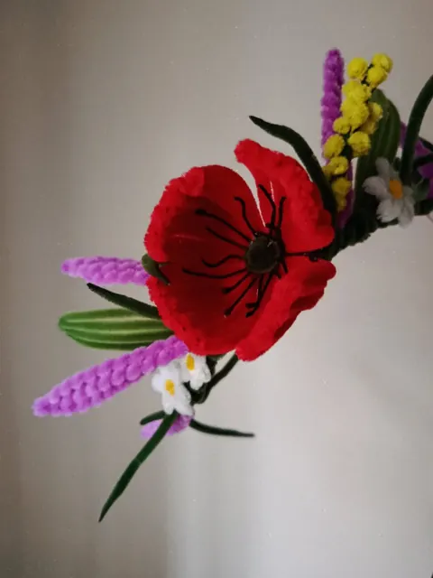

Bouquets · fait main
Bouquet de coquelicots
27 €
Fait main dans les Ardennes, emballé avec soin, avec sa carte de vœux offerte.
Bouquet de coquelicots en photos

La création
Des coquelicots rouges, des brins de lavande et du mimosa : un bouquet champêtre et lumineux.
Ce qui est compris
- Façonné à la main, à la commande, dans mon atelier de Signy-l’Abbaye.
- Emballé dans une pochette transparente fermée d’un nœud.
- Une carte de vœux offerte, avec le message de votre choix.
Le langage des fleurs
Le coquelicot rouge est la fleur du souvenir et de la consolation. Les pavots multicolores, eux, ont un vrai air de fête.
Commander
- Ouvrez cette création sur le site et ajoutez-la à votre sélection.
- Écrivez le message de votre carte de vœux, offerte.
- Envoyez votre demande : je vous confirme la date. Retrait gratuit à l’atelier de Signy-l’Abbaye, ou livraison à 5 € jusqu’à 15 km et 10 € jusqu’à 25 km.